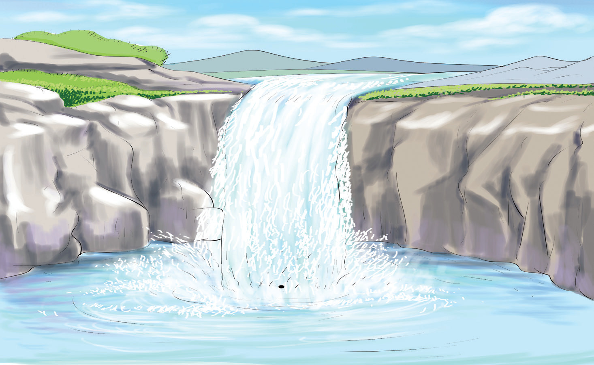

Nishati ya umeme
Umeme ni nishati inayotokana na vyanzo mbalimbali vikiwemo jua, upepo, maji na fueli. Vyanzo hivyo huzalisha umeme kwa kutumia mitambo mbalimbali kama paneli za jua na kinuupepo. Pia, hutumia vifaa kama jenereta, dainamo, selikavu, na betri.
Kuzalisha umeme kwa kutumia maji
Nguvu ya maji inayotokana na maporomoko hutumika kuzalisha umeme. Tabaini zilizounganishwa kwenye jenereta huzungusha maji kwa kasi. Tabaini ni mashine inayozungushwa na msukumo wa maji. Kitendo hiki kinapoendelea umeme huzalishwa. Hapa Tanzania, maporomoko ya maji yanayozalisha umeme yanapatikana Kidatu (Morogoro) na Mtera (Iringa). Sehemu nyingine ni Bwawa la Nyumba ya Mungu (Kilimanjaro), Kihansi (Morogogo), Pangani na Hale (Tanga). Kielelezo namba 11 kinaonesha maporomoko ya maji yanayoweza kutumika kuzalisha umeme.

Kuzalisha umeme kwa kutumia jua
Jua lina uwezo wa kuzalisha umeme. Miale ya jua hukusanywa na kifaa maalumu kinachoitwa paneli ya sola. Angalia Kielelezo namba 12. Paneli ya sola hubadilisha nishati ya mwanga wa jua kuwa nishati ya umeme. Paneli hizo huweza kuunganishwa na betri na kutunza umeme kwa matumizi mbalimbali.